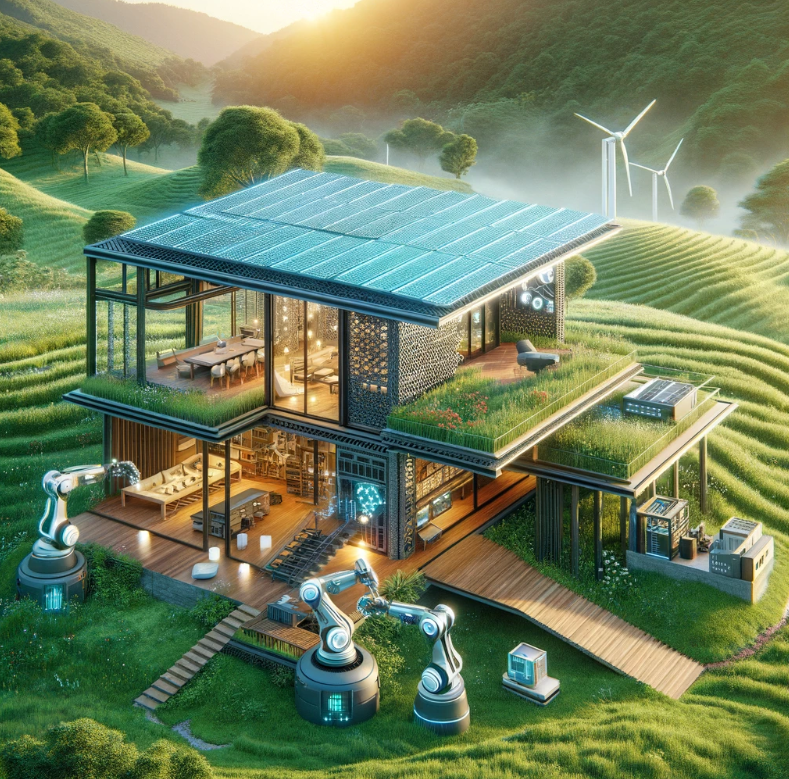

I am reading Sam Altmans UBI post titled "Moore's Law for Everything" and I have some questions.
Feel free to ask your questions about Sam Altman's "Moore's Law for Everything" post. What do you need help with?
Part 2 contains this: Part 2 - Moore's Law for Everything
“If robots can build a house on land you already own from natural resources mined and refined onsite, using solar power, the cost of building that house is close to the cost to rent the robots. And if those robots are made by other robots, the cost to rent them will be much less than it was when humans made them…”
Here is my question. How could robots possibly build houses using resources mined on site? Is Mr Altman saying these houses would be built from dirt?
Sam Altman's vision in "Moore's Law for Everything" reflects a futuristic perspective where technological advancements significantly reduce the cost of goods and services, including housing. The idea that robots could build houses using resources mined on-site encompasses several advanced technologies and concepts:
Automation and Robotics: The use of robots for construction and manufacturing processes. This includes the automation of building homes from start to finish, which would significantly reduce labor costs and potentially increase efficiency and precision.
On-site Resource Utilization (ISRU): This concept is often discussed in the context of space exploration, such as using the Moon's or Mars' natural resources for building materials. However, applied to Earth, it could mean using local materials (e.g., soil, sand, clay) that are processed and transformed into building materials. Technologies such as 3D printing with local materials could be utilized to create structures directly on-site.
Advanced Manufacturing Techniques: Techniques like 3D printing buildings using concrete or other materials processed from local resources. This could involve extracting and refining materials found on-site (like minerals in the soil) to create construction materials.
Renewable Energy Sources: The mention of using solar power to operate these robots indicates a reliance on renewable energy sources, making the construction process more sustainable and potentially reducing costs further.
Altman's statement may not imply building houses purely from "dirt" in the traditional sense but rather using sophisticated methods to process and convert local resources into viable building materials. This could involve creating composites or other engineered materials from natural resources found on-site, significantly reducing the need for transported materials and associated costs.
The broader implication of his statement is the potential for a future where technology drastically reduces the cost of living by making the construction of homes and other necessities more efficient, sustainable, and cost-effective. This vision hinges on advancements in robotics, materials science, and renewable energy, among other fields.
So, such a house would perhaps be built of concrete that is made on the building site by robots powered by solar power?
Yes, that's a plausible interpretation of Sam Altman's vision. The idea of building a house with concrete made on the building site by robots, powered by solar energy, aligns with the concepts he discusses. Here's how this futuristic scenario could work in practice:
Local Material Sourcing: Robots or automated systems could extract and process local materials (such as sand and aggregates) found on or near the building site. This reduces the need for transporting materials over long distances, thereby lowering costs and environmental impact.
Solar-Powered Operations: The entire operation, from material processing to the actual construction, could be powered by solar energy. This makes the building process more sustainable and less dependent on traditional energy sources. Solar panels could be installed on-site to power the robots and machinery involved in the construction process.
Advanced Robotics and 3D Printing: Robots could use advanced construction techniques, such as 3D printing with concrete, to build the house. 3D printing technology allows for creating complex structures efficiently and with less waste compared to traditional construction methods. Robots could be programmed to execute precise construction plans, laying down layers of concrete made from locally sourced materials to form the structure of the house.
Self-replicating or Robot-produced Robots: The mention of robots being made by other robots suggests a level of automation where the machinery and robots used in construction are themselves produced by automated processes. This could lead to a significant reduction in the cost of robotics technology, making the construction process even more cost-effective over time.
This approach combines several innovative technologies and sustainable practices, aiming to reduce the cost and environmental footprint of building homes. While this vision may seem futuristic, advances in robotics, 3D printing technology, and renewable energy are making such scenarios increasingly feasible.
What is the timeline for such a capability? 100 years? 200 years?
Predicting the exact timeline for the widespread implementation of fully automated, on-site house construction using locally sourced materials and powered by renewable energy is challenging due to the complex interplay of technological innovation, economic factors, regulatory environments, and societal readiness. However, several components of this vision are already in development or early deployment stages, indicating that the foundational technologies are advancing more rapidly than many might expect.
3D Printing of Buildings: As of my last update in April 2023, 3D printing of buildings is already a reality, though not yet widespread. This technology has seen significant advancements in the last decade, with several companies and research institutions successfully constructing small buildings, homes, and parts of larger structures. The pace of development suggests that more sophisticated and larger-scale applications could become practical within the next decade or two.
Automation and Robotics in Construction: Robotics in construction is also progressing, with automated systems being used for bricklaying, concrete dispensing, and even complex tasks like structural inspections via drones. The next step—fully autonomous construction sites—might be realized in the coming decades, as AI and robotics technology continue to evolve.
Renewable Energy Integration: The shift towards renewable energy, including solar power, is accelerating globally. This trend is supported by rapid improvements in solar technology, decreasing costs, and increasing societal demand for sustainable energy solutions. The integration of renewable energy into construction processes as the primary power source is feasible within the next few decades, especially as solar technology becomes more efficient and less expensive.
Material Science Advances: Innovations in material science, including the development of new, sustainable building materials and the efficient local sourcing and processing of raw materials, are crucial for this vision. Advances in this area are ongoing and could see practical application in construction within the next few decades.
Given these trajectories, a conservative estimate for seeing the beginnings of such fully integrated, automated construction systems might be within the next 20-50 years. However, achieving the full vision laid out by Sam Altman, where this approach becomes the norm rather than the exception, could take longer, potentially reaching maturity in the latter half of the 21st century.
It's important to note that technological capability is only one part of the equation. Regulatory approval, economic viability, societal acceptance, and the development of standards for safety and quality will also play significant roles in determining the timeline for widespread adoption.
What would such a house look like? Can you point me to any pictures? Artist impressions?

The image above is an artist's impression of what a futuristic house constructed using advanced robotics and 3D printing technology from locally sourced materials might look like. This concept envisions a home that is both sustainable and in harmony with its natural environment, powered by solar energy and featuring modern, eco-friendly design elements.
In the picture you supplied, which components would be made of concrete?
In the artist's impression of the futuristic house, several components could realistically be made of concrete, especially when considering the use of advanced 3D printing technology and sustainable building practices. Here's how concrete might be utilized in such a structure:
Foundation: The foundation of the house would likely be made of concrete for its strength and durability, providing a stable base for the structure.
Walls: The exterior and possibly some interior walls could be constructed from concrete. 3D printing technology allows for the creation of walls with complex geometries, integrated insulation spaces, and even built-in channels for electrical and plumbing systems, all of which could be efficiently produced using concrete.
Floors: Concrete floors are durable and can be finished in various ways to suit different aesthetic preferences. With 3D printing, it's possible to create floors with intricate patterns or textures directly as they are formed.
Roof: While more traditional homes might not use concrete for roofing due to weight concerns, a futuristic house designed with sustainability in mind might incorporate a specially engineered lightweight concrete roof. This could be designed to support green roofing systems, solar panels, or other eco-friendly features.
Built-in Furniture: Some elements of built-in furniture, such as benches, countertops, or even integrated sinks, could be made from concrete. This would be particularly effective in creating seamless designs that are both functional and aesthetically pleasing.
Architectural Features: Concrete's versatility allows for the creation of unique architectural features, such as sculptural forms or integrated planters for greenery, enhancing the building's connection with its natural surroundings.
The use of concrete in these components would be facilitated by the advancements in 3D printing technology, allowing for the creation of structures that are not only strong and energy-efficient but also aesthetically diverse and tailored to the specific needs of the inhabitants.
Wow. Sounds like most everything in the house could be built using concrete. 3D printing seems to be key.
Absolutely, 3D printing technology is a game-changer in the construction industry, especially for innovative uses of concrete. This technology allows for a level of precision, versatility, and efficiency that traditional construction methods can't match. Here are a few key ways 3D printing is transforming the use of concrete in construction:
Customization: 3D printing enables the creation of complex, custom shapes and designs at no extra cost, allowing for unique architectural features that would be difficult or prohibitively expensive to achieve with traditional construction methods.
Efficiency and Waste Reduction: Since 3D printing deposits material only where it's needed, it significantly reduces waste compared to standard construction techniques. This efficiency not only saves materials but also contributes to the sustainability of the construction process.
Speed: Building structures with 3D printing can be much faster than traditional methods, as large parts of the building can be printed continuously. This speed in construction could reduce building times from months to weeks or even days for certain structures.
Integrated Functionality: With 3D printing, it's possible to integrate multiple functions within single printed elements, such as structural support, insulation, and aesthetic features, reducing the need for additional materials and processes.
Strength and Durability: Advances in concrete mixes and reinforcement techniques used in 3D printing can lead to structures that are both strong and durable, capable of withstanding environmental stressors.
Cost Reduction: Over time, as the technology becomes more widespread and efficient, the cost of 3D printed structures is expected to decrease, making it a cost-effective option for a wide range of construction projects.
Accessibility and Scalability: 3D printing could make building homes more accessible in remote or underserved areas, by reducing the need for skilled labor and allowing for construction in challenging environments.
The potential for 3D printing in construction is vast, and as the technology continues to evolve, it's likely that we'll see even more innovative applications of concrete and other materials in building sustainable, efficient, and unique homes and structures.
Thank you.
You're welcome! If you have any more questions or need further information, feel free to ask. Happy to help!